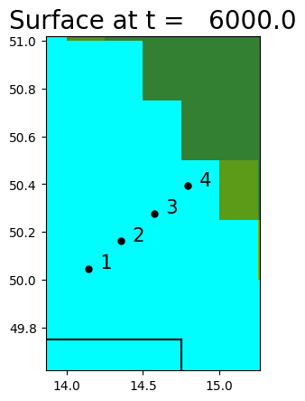

< < < Index > > >

Image source: /Users/rjl/clawpack_src/clawpack_master/geoclaw/examples/tsunami/radial-ocean-island-fgmax/_plots/frame0003fig7.png
Other figures at this time: pcolor Zoom1 All Figures
Other frames: 0 1 2 3 4 5 6 7 All Frames